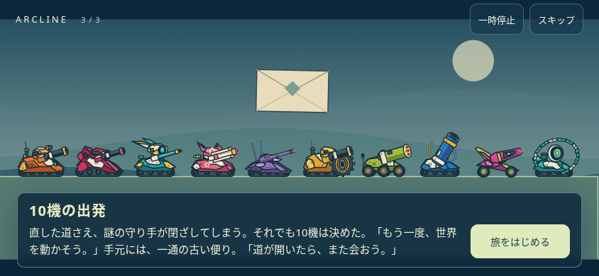

港も、橋も、空の道も。止まってしまった輸送路を、10機の相棒とつなぎ直す。新しい物語を、出発から旅の終わりまで。
全100面のクリア後に、その場所で進んだ復旧を表示します。中ボスの後には手掛かりと仲間の返答。大ボスの後には、ひとつの区間を取り戻したことが伝わる復旧メッセージを。半透明の枠へ、一文字ずつ言葉が浮かび上がります。
プロローグとエピローグを、専用の場面演出へ。橋が開き、貨物が行き交い、消えた灯りが戻る。30面と60面にも、旅の意味を確かめる短い幕間を加えました。キャラクターと背景は、ゲームと同じCanvasのコードで描いています。

本文をタップすると全文表示。映像は一時停止、場面送り、スキップができます。クリア結果は自動では閉じません。
旅の記録から出発の場面を再生できます。100面をクリアすると、エピローグも。途中で閉じた最後の場面は、次の起動時に再開します。
今までの機体、進行、章の持ち物を引き継ぎます。戦闘の威力、地形、弾道の太さと着弾演出の大きさは0.11のままです。
力を使う理由、ためらい、仲間との関係。物語を新しい原稿へ更新しました。核心となる記録は、旅の進行に合わせて開きます。
物語全文をダウンロード（結末までのネタバレ）実装・確認状況 ／ 以前のお知らせ